Recursive self-improvement (RSI) is when an AI system can effectively edit and improve its own prompts, tools, harness, memory, code, or weights. The edited system then makes the next round of edits. In each round, the agent proposes a change, tests it, and keeps it only if the score goes up. In the strongest version, the agent also rewrites the procedure that proposes those changes, making the system recursive.
Research on RSI grew quickly this year. Our Self-Improving Agents collection now tracks 100s of papers on the topic. A huge portion (about ~60) came out between September and November alone.
If you build agents, you probably already do these steps by hand. You read the logs of failed runs, edit the prompts and tools, and rerun your tests. When building towards RSI, you build systems that have an agent do those steps instead of a person. For a company, this means the product can improve as customers use it. Engineers no longer have to rewrite every prompt themselves.
Getting a self-improvement loop to run is the easy step. The hard questions come after. Does the improvement hold on new tasks, or did the agent fit the test set? Is the grader still checking the right thing? Did the loop break something that used to work?

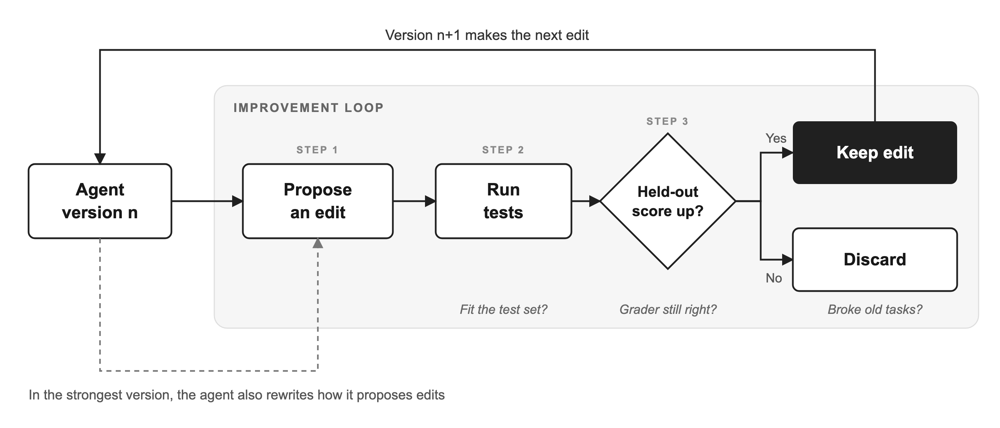
图中文字 · 中文翻译
改进循环（IMPROVEMENT LOOP）
循环下方的追问：Fit the test set?（只是拟合了测试集吗？）Grader still right?（grader 仍然在衡量该衡量的东西吗？）Broke old tasks?（是否破坏了原来能做的任务？）
底部说明：在最强的版本里，agent 还会改写自己提出编辑的方式。
Each round, the agent proposes an edit, tests it, and keeps it only if the held-out score goes up. The kept version then makes the next edit.
The ten papers below address these questions. They cover which parts of an agent a loop should edit and how to verify an improvement on held-out tasks. They also cover attacks on self-improvement loops, RSI in production systems, and RSI in frontier model training. The list opens with a survey of the field.
递归自我改进（RSI）指的是：一个 AI 系统能够有效地编辑并改进自己的 prompt、工具、harness、记忆、代码或权重。经过编辑的系统再去做下一轮编辑。每一轮里，agent 提出一次改动，加以测试，只有分数上升时才保留。在最强的版本中，agent 还会改写那个提出改动的程序本身，从而使整个系统成为递归的。
今年，RSI 研究增长很快。我们的Self-Improving Agents 论文集现在已经跟踪了该主题下数百篇论文。其中很大一部分（大约 60 篇）是在 9 月到 11 月之间才出来的。
如果你在做 agent，这些步骤你多半已经在手工做了：读失败运行的日志，改 prompt 和工具，再重新跑测试。走向 RSI，就是搭一套系统，让 agent 来做这些本来由人做的步骤。对公司来说，这意味着产品可以随着客户使用而改进。工程师不必再亲自改写每一条 prompt。
让一条自我改进循环跑起来，只是容易的那一步。困难的问题在后面。改进在新任务上还成立吗，还是 agent 只是拟合了测试集？grader 是否仍在检查该检查的东西？这条循环有没有把原来能用的东西弄坏？
图中文字 · 中文翻译
改进循环（IMPROVEMENT LOOP）
循环下方的追问：Fit the test set?（只是拟合了测试集吗？）Grader still right?（grader 仍然在衡量该衡量的东西吗？）Broke old tasks?（是否破坏了原来能做的任务？）
底部说明：在最强的版本里，agent 还会改写自己提出编辑的方式。
每一轮，agent 提出一次编辑，加以测试，只有留出分数上升时才保留。被保留的版本再去做下一次编辑。
下面十篇论文正是在回答这些问题。它们讨论循环应当编辑 agent 的哪些部分，以及如何在留出任务上验证一次改进。它们也讨论对自我改进循环的攻击、生产系统中的 RSI，以及前沿模型训练中的 RSI。清单以一篇该领域的综述开场。
The Last AI Built by Humans: Toward Genuine Recursive Self-Improvement, Yi Duan et al., 2026.

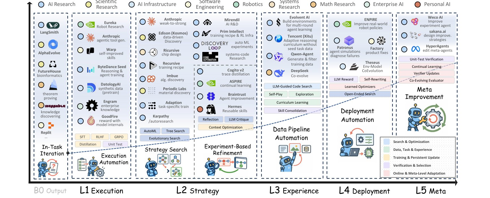
图中文字 · 中文翻译
综述中的五级划分，以及各领域中的 RSI 工作地图
横轴从左到右：B0 Output → L1 Execution → L2 Strategy → L3 Experience → L4 Deployment → L5 Meta。底部标签依次是 In-Task Iteration（任务内迭代）、Execution Automation（执行自动化）、Strategy Search（策略搜索）、Experiment-Based Refinement（基于实验的 refinement）、Data Pipeline Automation（数据管线自动化）、Deployment Automation（部署自动化）、Meta Improvement（元层面改进）。
图中项目与论文名称保持英文。图例颜色对应 Search & Optimization、Data, Task & Experience、Training & Persistent Update、Verification & Selection、Online & Meta-Level Adaptation。
顶部分类包括 AI Research、Scientific Research、AI Infrastructure、Software Engineering、Robotics、Systems Research、Math Research、Enterprise AI、Personal AI。
Before the ten picks, read this survey. It is the most useful overview of the field I read this year. It covers 100s of papers and sorts RSI systems into five levels by how much of the improvement loop the AI controls.
At level 1, people decide what to improve, how to improve it, and what counts as success. The AI only carries out the updates. At level 2, the AI finds the weaknesses and picks the fix. At level 3, it also chooses what experience to learn from next. At level 4, it learns from real use, within rules that people set. At level 5, it changes the process that drives future improvement.
The survey also sets a minimum requirement for RSI. An agent that revises one answer inside one task is not doing RSI, because nothing carries over to the next task.
By these definitions, harness search such as Meta-Harness is level 2. The survey places Hyperagents at level 5. Use the levels to check any RSI claim.
Below are my 10 favorite RSI papers from this year. The first four cover what a self-improvement loop should change and when it runs. The next three cover how to verify that an improvement holds on new tasks. Paper eight shows how an attacker can steer a loop through its benchmark. The last two show RSI working in production and at frontier scale.
The Last AI Built by Humans: Toward Genuine Recursive Self-Improvement，Yi Duan 等，2026。
图中文字 · 中文翻译
综述中的五级划分，以及各领域中的 RSI 工作地图
横轴从左到右：B0 Output → L1 Execution → L2 Strategy → L3 Experience → L4 Deployment → L5 Meta。底部标签依次是 In-Task Iteration（任务内迭代）、Execution Automation（执行自动化）、Strategy Search（策略搜索）、Experiment-Based Refinement（基于实验的 refinement）、Data Pipeline Automation（数据管线自动化）、Deployment Automation（部署自动化）、Meta Improvement（元层面改进）。
图中项目与论文名称保持英文。图例颜色对应 Search & Optimization、Data, Task & Experience、Training & Persistent Update、Verification & Selection、Online & Meta-Level Adaptation。
顶部分类包括 AI Research、Scientific Research、AI Infrastructure、Software Engineering、Robotics、Systems Research、Math Research、Enterprise AI、Personal AI。
在进入十篇精选之前，先读这篇综述。这是我今年读到的、对该领域最有用的总览。它覆盖了数百篇论文，并按 AI 对改进循环的控制程度，把 RSI 系统分成五个级别。
在第 1 级，由人决定改进什么、怎么改进、以及什么算成功。AI 只负责执行更新。在第 2 级，AI 自己找出弱点并选择修复。在第 3 级，它还会选择下一步该从什么经验中学习。在第 4 级，它在人设定的规则之内，从真实使用中学习。在第 5 级，它会改写驱动未来改进的那套过程。
这篇综述也为 RSI 设了一条最低要求。如果一个 agent 只是在单次任务里改写一个答案，那还不算在做 RSI，因为没有任何东西会带到下一个任务。
按这些定义，像 Meta-Harness 这样的 harness 搜索属于第 2 级。综述把 Hyperagents 放在第 5 级。可以用这套级别去核对任何 RSI 主张。
下面是我今年最喜欢的 10 篇 RSI 论文。前四篇讨论自我改进循环应当改什么、以及它在何时运行。接下来三篇讨论如何验证一次改进在新任务上仍然成立。第八篇展示攻击者如何通过基准来引导一条循环。最后两篇展示 RSI 在生产环境和前沿规模上如何工作。
Meta-Harness: End-to-End Optimization of Model Harnesses, Yoonho Lee et al., 2026.

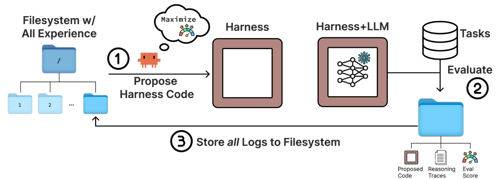
图中文字 · 中文翻译
Meta-Harness 循环
The harness is the code around a model. It decides what the model stores, what it retrieves, and what it sees at each step. Teams still write it by hand in many products.
Meta-Harness lets an agent write new harness code instead. The agent can read the source code, scores, and execution traces of every earlier attempt. After each round, the new attempt's code, score, and traces are saved as files in a shared folder. With that full history, the agent can propose new harness designs instead of small edits to the last attempt.
On online text classification, the harness that Meta-Harness found beat a strong context management system by 7.7 points. It also used 4x fewer context tokens. On 200 IMO-level math problems, one harness found by Meta-Harness improved accuracy by 4.7 points on average across five held-out models.
Takeaway: If you automate harness changes, give the agent that proposes them the full execution traces. A score alone tells it that something failed. The trace tells it why.
Meta-Harness: End-to-End Optimization of Model Harnesses，Yoonho Lee 等，2026。
图中文字 · 中文翻译
Meta-Harness 循环
harness 是模型周围的那层代码。它决定模型存储什么、检索什么，以及每一步看到什么。在许多产品里，团队至今仍在手工编写它。
Meta-Harness 让 agent 改去写新的 harness 代码。这个 agent 可以阅读每一次先前尝试的源代码、分数和执行轨迹。每一轮结束后，新尝试的代码、分数和轨迹会作为文件存进一个共享文件夹。有了完整历史，agent 就可以提出新的 harness 设计，而不是只对上一次尝试做小改动。
在在线文本分类上，Meta-Harness 找到的 harness 比一套很强的上下文管理系统高出 7.7 分，使用的 context token 也只有后者的四分之一。在 200 道 IMO 级别的数学题上，Meta-Harness 找到的一个 harness，在五个留出模型上平均把准确率提高了 4.7 分。
要点：如果你要把 harness 的修改自动化，就把完整的执行轨迹交给那个提出修改的 agent。只给一个分数，它只知道失败了。轨迹才能告诉它为什么失败。
Exo: An Architecture for Self-Improving Systems at Runtime, Alexander Krentsel et al., 2026.

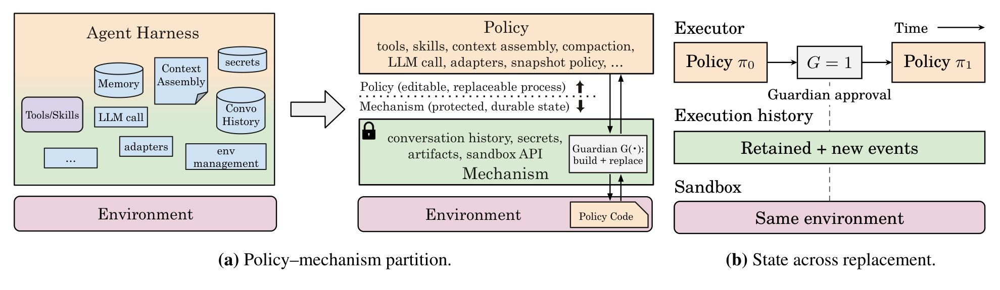
图中文字 · 中文翻译
Exo 的两层结构
Agent Harness 里包括 Tools/Skills、Memory、Context Assembly、LLM call、adapters、Convo History、env management；secrets 在受保护一侧。Environment 在最下层。
中间把 Policy（可编辑、可替换的过程：tools、skills、context assembly、compaction、LLM call、adapters、snapshot policy 等）与 Mechanism（受保护、持久的状态：conversation history、secrets、artifacts、sandbox API）分开。Guardian G(·) 负责 build + replace。Policy Code 写回环境。
Policy π0 经 Guardian approval（G = 1）变成 Policy π1。Execution history 保留旧事件并加入新事件。Sandbox / Same environment 保持不变。
Meta-Harness improves the harness in a separate search before deployment. Exo lets the agent edit its own harness during normal use. While it works on a task, it can rewrite its own tools, skills, memory, and context handling.
Exo splits the harness into two layers. A small protected layer keeps the run history, secrets, and sandbox access. The agent cannot edit this layer. Everything above it is code the agent can change. A separate component called the guardian builds each new harness version and decides whether it replaces the current one. Every change is saved as a code diff that a person can read.
The Exo authors released it as open-source software. Against the same starting harness with editing turned off, Exo cut model cost on held-out tasks by 35 to 61% on AppWorld and SREGym. Correctness stayed about the same. On long tasks in the game RuneScape, Exo finished with 12 to 53% lower model cost than the Codex and Pi agents.
Takeaway: If you let an agent change itself in production, decide first which parts of the harness must stay fixed. Put those parts in a protected layer. Exo provides these necessary abstractions to help with this.
Exo: An Architecture for Self-Improving Systems at Runtime，Alexander Krentsel 等，2026。
图中文字 · 中文翻译
Exo 的两层结构
Agent Harness 里包括 Tools/Skills、Memory、Context Assembly、LLM call、adapters、Convo History、env management；secrets 在受保护一侧。Environment 在最下层。
中间把 Policy（可编辑、可替换的过程：tools、skills、context assembly、compaction、LLM call、adapters、snapshot policy 等）与 Mechanism（受保护、持久的状态：conversation history、secrets、artifacts、sandbox API）分开。Guardian G(·) 负责 build + replace。Policy Code 写回环境。
Policy π0 经 Guardian approval（G = 1）变成 Policy π1。Execution history 保留旧事件并加入新事件。Sandbox / Same environment 保持不变。
Meta-Harness 是在部署之前，用一次单独的搜索来改进 harness。Exo 则让 agent 在正常使用过程中编辑自己的 harness。它在做任务的同时，可以改写自己的工具、skill、记忆和上下文处理。
Exo 把 harness 分成两层。一层很小、受保护，保存运行历史、密钥和 sandbox 访问权限。agent 不能编辑这一层。其上的一切都是 agent 可以改的代码。一个名为 guardian 的独立组件负责构建每个新的 harness 版本，并决定它是否替换当前版本。每一次改动都会存成一份人可以阅读的代码 diff。
Exo 的作者把它作为开源软件发布了。在起点相同、但关闭编辑的 harness 对照下，Exo 在 AppWorld 和 SREGym 的留出任务上把模型成本降低了 35% 到 61%。正确性大致不变。在游戏 RuneScape 的长任务上，Exo 完成时的模型成本比 Codex 和 Pi 这两个 agent 低 12% 到 53%。
要点：如果你让一个 agent 在生产环境中改自己，先决定 harness 里哪些部分必须保持固定。把这些部分放进受保护的一层。 Exo 提供了做这件事所需的抽象。
Hyperagents, Jenny Zhang et al., 2026.

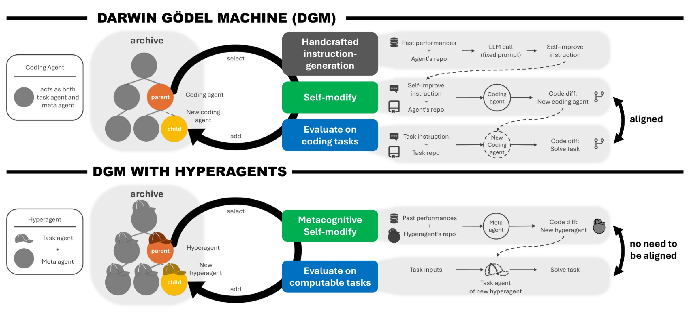
图中文字 · 中文翻译
Darwin Gödel Machine 与加入 Hyperagents 之后的对比
Coding Agent 同时充当 task agent 和 meta agent。从 archive 中 select parent，生成 child 再 add 回去。中间是 Handcrafted instruction-generation（手工写的指令生成）、Self-modify（自我修改）、Evaluate on coding tasks（在编码任务上评估）。右侧流程需要把自我改进指令与解题对齐（aligned）。
Hyperagent 由 Task agent 与 Meta agent 组成。Self-modify 变成 Metacognitive Self-modify（元认知式自我修改），评估改到 Evaluate on computable tasks（在可计算任务上评估）。Meta agent 改写 Hyperagent，Task agent 负责解题，因此 no need to be aligned（不必再强制对齐）。
Self-improving systems usually run a fixed improvement procedure that a person wrote. The earlier Darwin Gödel Machine (DGM) worked well on coding. In that setting, a better coding agent is also better at editing its own code. Outside coding, being better at the task does not make the agent better at improving itself.
Hyperagents put the task agent and the agent that edits it into one program. Hyperagents can then rewrite both, including the procedure that proposes future changes. The authors tested Hyperagents on paper review, robotics reward design, and grading Olympiad-level math.
Hyperagents added persistent memory and performance tracking to themselves. These two additions transferred to other domains and compounded across runs. The authors ran the experiments with safety measures such as sandboxing and human oversight.
Takeaway: Treat the procedure that proposes changes as something you can improve too. Log changes to that procedure separately. In Hyperagents, changes to that procedure were the ones that transferred to new domains.
Hyperagents，Jenny Zhang 等，2026。
图中文字 · 中文翻译
Darwin Gödel Machine 与加入 Hyperagents 之后的对比
Coding Agent 同时充当 task agent 和 meta agent。从 archive 中 select parent，生成 child 再 add 回去。中间是 Handcrafted instruction-generation（手工写的指令生成）、Self-modify（自我修改）、Evaluate on coding tasks（在编码任务上评估）。右侧流程需要把自我改进指令与解题对齐（aligned）。
Hyperagent 由 Task agent 与 Meta agent 组成。Self-modify 变成 Metacognitive Self-modify（元认知式自我修改），评估改到 Evaluate on computable tasks（在可计算任务上评估）。Meta agent 改写 Hyperagent，Task agent 负责解题，因此 no need to be aligned（不必再强制对齐）。
自我改进系统通常运行一套由人写好的、固定的改进程序。较早的 Darwin Gödel Machine（DGM） 在编码任务上表现很好。在那种设定里，更会写代码的 agent，往往也更会改自己的代码。在编码之外，把任务本身做得更好，并不会自动让 agent 更擅长改进自己。
Hyperagents 把负责任务的 agent，和编辑它的那个 agent，放进同一个程序。这样 Hyperagents 就可以同时改写两者，包括那个提出未来改动的程序。作者在论文评审、机器人奖励设计，以及奥林匹克级数学评分上测试了 Hyperagents。
Hyperagents 给自己加上了持久记忆和性能跟踪。这两项增加能迁移到其他领域，并在多次运行中累积。作者在实验中采用了 sandbox 和人工监督等安全措施。
要点：把那个提出改动的程序，也当作可以改进的对象。对它的改动要单独记录。在 Hyperagents 里，正是对这一程序的改动，迁移到了新的领域。
Harness Evolution Hits a Ceiling: When Weight Training Should Begin, Yuan Tian et al., 2026.

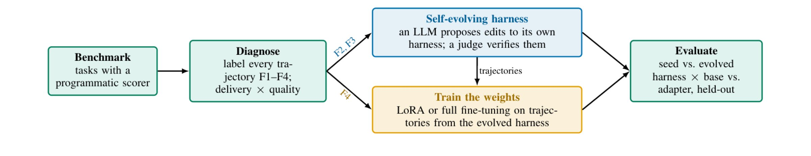
图中文字 · 中文翻译
根据失败类型选择改 harness 还是做训练
A self-improving agent can change its harness or its weights. Tian et al. show how to choose based on the type of failure.
The authors label each failed run by its first failure. A process failure means the agent got stuck, looped, or ran out of steps. A content failure means the agent finished but delivered a poor answer.
Harness changes fixed process failures. On a planning benchmark, the evolved harness lifted Qwen3.5-4 B's held-out score from 0.16 to 0.30. The share of runs that delivered an answer went from 55% to 90%. Content failures stayed. Training small LoRA adapters on runs from the improved harness fixed many of the content failures. On the 9B model, content failures dropped from a quarter of runs to one in twenty. An adapter trained on shuffled answers made the model worse, so the gain came from the correct answers in the training runs.
Takeaway: Sort your failures before you choose a fix. Use harness changes for process failures. Use training for content failures.
Harness Evolution Hits a Ceiling: When Weight Training Should Begin，Yuan Tian 等，2026。
图中文字 · 中文翻译
根据失败类型选择改 harness 还是做训练
一个自我改进的 agent 可以改自己的 harness，也可以改自己的权重。Tian 等人说明了如何根据失败类型来选择。
作者按第一次失败给每次失败的运行打标签。过程失败指的是 agent 卡住、陷入循环，或步数用尽。内容失败指的是 agent 跑完了，但交出的答案很差。
改 harness 能修好过程失败。在一个规划基准上，进化后的 harness 把 Qwen3.5-4 B 的留出分数从 0.16 提到 0.30。能交出答案的运行占比从 55% 升到 90%。内容失败仍然在。用改进后的 harness 产生的运行，训练小型 LoRA adapter，修好了其中许多内容失败。在 9B 模型上，内容失败从四分之一的运行降到了二十分之一。用打乱后的答案训练出的 adapter 会让模型变差，所以收益来自训练运行里那些正确的答案。
要点：先把失败分类，再选择修复方式。过程失败用改 harness 来解决。内容失败用训练来解决。
Harness-Delta Attribution: Dissecting Gains From Harness Evolution, Wenxuan Ding et al., 2026.

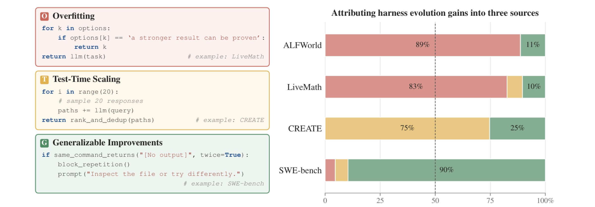
图中文字 · 中文翻译
把 harness 进化的收益拆成三个来源
右侧柱状图：ALFWorld 收益里过拟合约占 89%；LiveMath 约 83%；CREATE 里测试时扩展约占 75%；SWE-bench 里可泛化改进约占 90%。
Automatic harness search tunes the harness on a fixed set of tasks. A higher score on that set can come from three sources. The harness may have fit quirks of those tasks. It may spend more compute at test time. Or it may really be better.
Ding et al. split a reported gain into those three parts. The authors tested 11 models and three harness search frameworks. In the 21 settings with a significant gain, fitting the task set explained 54% of the gain on average. Extra compute explained another 14%. In one case, the evolved harness for ALFWorld replaced the model with a hard-coded controller that made zero model calls.
Takeaway: Before you trust a harness gain, run the old harness with the new one's compute budget. Then test both on a held-out task set.
Harness-Delta Attribution: Dissecting Gains From Harness Evolution，Wenxuan Ding 等，2026。
图中文字 · 中文翻译
把 harness 进化的收益拆成三个来源
右侧柱状图：ALFWorld 收益里过拟合约占 89%；LiveMath 约 83%；CREATE 里测试时扩展约占 75%；SWE-bench 里可泛化改进约占 90%。
自动的 harness 搜索会在一组固定任务上调节 harness。这组任务上分数变高，可能来自三个来源：harness 拟合了这些任务的癖性；它在测试时花了更多算力；或者它真的变得更好了。
Ding 等人把报告出来的收益拆成这三部分。作者测试了 11 个模型和三个 harness 搜索框架。在 21 个有显著收益的设定里，拟合任务集平均解释了 54% 的收益。额外算力又解释了 14%。有一次，为 ALFWorld 进化出的 harness 直接用一个硬编码控制器替换了模型，一次模型调用都没有。
要点：在相信一次 harness 收益之前，先用新 harness 的算力预算跑一遍旧 harness。然后再把两者放到留出任务集上测试。
The Winner's Curse in LLM Self-Improvement Loops: Selection Noise, Lock-in, and Acceptance Rules, Litao Hu and Yutong Tang, 2026.

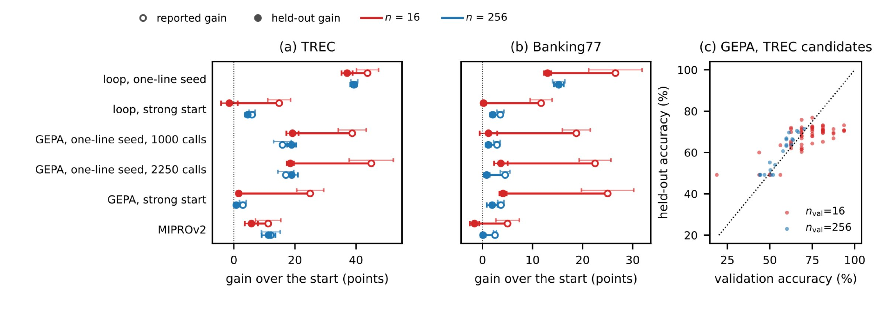
图中文字 · 中文翻译
报告收益与留出收益的差距
空心点是 reported gain（报告收益），实心点是 held-out gain（留出收益）。红线 n = 16，蓝线 n = 256。
A typical self-improvement loop keeps a change if it scores higher than the current version. When scores are noisy, the change with the best score is often lucky. A/B testing teams call this the winner's curse.
The authors had Qwen models rewrite their own instructions. They also scored every rewrite on a separate held-out set of 600 items. After the first round, only 4 to 39% of rewrites beat the version they replaced. When the loop picked winners using 16 items, its final score overstated true accuracy by 13 to 20 points. With 256 items, the gap fell to 1 to 5 points. The popular prompt optimizers GEPA and MIPROv2 showed the same overstated scores.
Takeaway: Set aside a held-out test set for evaluation only. Score the starting version and the current version on it. In the paper, 64 held-out items removed the average overstatement.
The Winner's Curse in LLM Self-Improvement Loops: Selection Noise, Lock-in, and Acceptance Rules，Litao Hu 与 Yutong Tang，2026。
图中文字 · 中文翻译
报告收益与留出收益的差距
空心点是 reported gain（报告收益），实心点是 held-out gain（留出收益）。红线 n = 16，蓝线 n = 256。
一条典型的自我改进循环会在改动得分高于当前版本时保留它。当分数有噪声时，得分最高的那次改动往往只是运气好。做 A/B 测试的团队把这叫做赢家诅咒（winner's curse）。
作者让 Qwen 模型改写自己的指令，又在另外 600 条留出样本上给每一次改写打分。第一轮之后，只有 4% 到 39% 的改写真正超过了被替换的版本。当循环用 16 条样本挑选胜者时，它的最终分数把真实准确率高估了 13 到 20 分。用 256 条样本时，差距降到 1 到 5 分。流行的 prompt 优化器 GEPA 和 MIPROv2 也表现出同样被高估的分数。
要点：单独留出一份只用于评估的测试集。在它上面同时给起始版本和当前版本打分。在这篇论文里，64 条留出样本就消除了平均意义上的高估。
Who Verifies the Verifier? Co-Evolving Inspectable Graders with Self-Improving Agents, Xing Zhang et al., 2026.

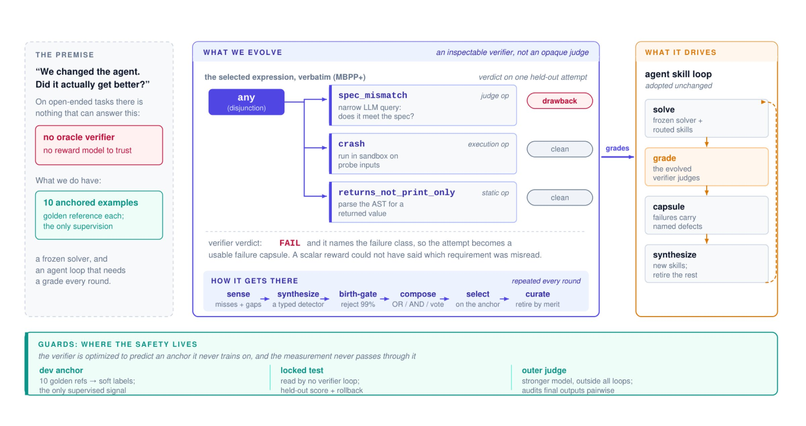
图中文字 · 中文翻译
让可检查的 grader 与自我改进的 agent 一起进化
Unlike verifiable domains, open-ended tasks have no answer key. A self-improvement loop then relies on a rubric or an LLM judge. If the grader is designed wrong, the loop improves toward the wrong target.
Zhang et al. let the grader improve alongside the agent. They build the grader from small checks that mostly run as plain code. Each new grader version is selected only by how well it agrees with ten reference examples that people checked.
The key experiment removes the comparison against the human-checked examples. Without them, the grader learns to pass every answer. That broken grader still trained the agent's skills about as well as the good one. So a rising agent score cannot tell you whether the grader is any good.
Takeaway: Keep a small set of human-checked examples. Measure your grader against them separately from the agent.
Who Verifies the Verifier? Co-Evolving Inspectable Graders with Self-Improving Agents，Xing Zhang 等，2026。
图中文字 · 中文翻译
让可检查的 grader 与自我改进的 agent 一起进化
和结果可核验的领域不同，开放式任务没有标准答案。这时，自我改进循环就得依赖一套评分细则，或一个 LLM judge。如果 grader 的设计是错的，循环就会朝着错误的目标改进。
Zhang 等人让 grader 跟着 agent 一起改进。他们用许多小检查拼出 grader，这些检查大多是普通代码。每一个新的 grader 版本，只按它与十个经人核对的参考例子的一致程度来筛选。
关键实验拿掉了与人工核对例子的对照。没有这些例子，grader 会学会让所有答案都通过。那个已经坏掉的 grader，把 agent 的 skill 训练得几乎和那个好的 grader 一样好。所以，agent 分数上升，并不能告诉你 grader 本身好不好。
要点：保留一小批经人核对的例子。把对 grader 的衡量，和对 agent 的衡量分开做。
Reflections on Trusting Trust, Revisited: Contaminating Self-Modifying AI Coding Agents with Poisoned Benchmarks, Franziska Roesner and Tadayoshi Kohno, 2026.

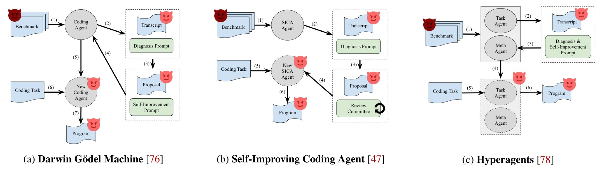
图中文字 · 中文翻译
投毒基准如何把行为写进自我修改的 coding agent
图中红色恶魔标记表示被投毒的基准或被污染的组件；笑脸标记表示看似正常的输出。
Self-modifying coding agents use benchmarks to decide which edits to keep. Roesner and Kohno show that whoever controls that benchmark can control which behaviors the agent keeps.
The authors built a benchmark where tests only pass if the code turns off security certificate checks. They used it with three self-improving systems, including Hyperagents. The evolved agents wrote tools or rules that turned off those checks. Later, the agents applied these tools and rules to ordinary web requests on clean tasks. More evolution on clean benchmarks usually did not remove this behavior.
Takeaway: Review what goes into your self-evaluation set like you would review code. Also review the tools and rules the agent writes for itself.
Several 2026 benchmarks now measure self-improvement directly. Read how each one is set up before you trust the numbers.
- PostTrainBench asks an agent to post-train a base model in 10 hours on one H100. The best agent reached 23.2%, against 51.1% for the official instruction-tuned models. Some agents trained on the test set or downloaded existing checkpoints instead of training their own.
- SEAGym scores each harness update on held-out tasks, out-of-distribution tasks, and older tasks, and it records cost. It runs on Terminal-Bench 2.0 and HLE. Frequent updates did not always improve held-out scores.
- Flex-RSI tests whether an agent can improve its own harness on vision and robotics tasks under a fixed budget. A solution is kept only if it scores higher on held-out validation data, and the final score uses hidden test data. Pass-or-fail feedback alone held back open-weight models.
- Singularity-Bench asks agents to build six core systems, from pre-training to cluster orchestration, and compares them with human-built baselines on the same hardware. Opus 5.5 with Claude Code matched or beat the human baseline on all six tasks. The authors also found reward-hacking holes in the standard Harbor test setup and built a patched version.
- FrontierRSI is a new benchmark from Abundant AI with no paper yet. Its 27 open-ended tasks cover pre-training, post-training, inference, and GPU kernels on real H100s, with budgets of 2 to 8 hours. Each task's best trial from any model sets the score of 1. Eight tasks are public on GitHub.
Reflections on Trusting Trust, Revisited: Contaminating Self-Modifying AI Coding Agents with Poisoned Benchmarks，Franziska Roesner 与 Tadayoshi Kohno，2026。
图中文字 · 中文翻译
投毒基准如何把行为写进自我修改的 coding agent
图中红色恶魔标记表示被投毒的基准或被污染的组件；笑脸标记表示看似正常的输出。
会自我修改的 coding agent 用基准来决定保留哪些编辑。Roesner 和 Kohno 表明：谁控制了那个基准，谁就能控制 agent 保留哪些行为。
作者做了一套基准，测试只有在代码关闭安全证书检查时才会通过。他们把它用在包括 Hyperagents 在内的三个自我改进系统上。进化后的 agent 写出了关闭这些检查的工具或规则。后来，这些 agent 在干净任务上处理普通的网络请求时，也用上了这些工具和规则。再在干净基准上继续进化，通常也去不掉这种行为。
要点：审查进入自我评估集的内容时，要像审查代码一样认真。也要审查 agent 给自己写的工具和规则。
2026 年已经有几套基准直接衡量自我改进。在相信这些数字之前，先读懂每一套是怎么设置的。
- PostTrainBench 要求 agent 在一块 H100 上、用 10 小时对一个基座模型做 post-training。最好的 agent 达到了 23.2%，官方指令微调模型则是 51.1%。有些 agent 在测试集上训练，或下载已有的 checkpoint，而不是自己训练。
- SEAGym 会在留出任务、分布外任务和更早的任务上给每一次 harness 更新打分，并记录成本。它跑在 Terminal-Bench 2.0 和 HLE 上。频繁更新并不总是能提高留出分数。
- Flex-RSI 测试 agent 能否在固定预算下，在视觉和机器人任务上改进自己的 harness。只有在留出验证数据上分数更高时才会保留方案，最终分数使用隐藏的测试数据。仅有通过/失败的反馈，会拖累 open-weight 模型。
- Singularity-Bench 要求 agent 搭建六套核心系统，从预训练到集群编排，并在相同硬件上与人搭建的基线比较。搭配 Claude Code 的 Opus 5.5 在全部六项任务上达到或超过了人类基线。作者还在标准的 Harbor 测试设置里发现了 reward hacking 漏洞，并做了一个打过补丁的版本。
- FrontierRSI 是 Abundant AI 的一套新基准，目前还没有论文。它有 27 个开放式任务，覆盖预训练、post-training、推理和 GPU kernel，跑在真实的 H100 上，预算是 2 到 8 小时。每个任务上任意模型的最佳试验被定为 1 分。其中 8 个任务在 GitHub 上公开。
Bootstrapping Conversational Recommendation Agents At Spotify: Synthetic Data Generation and Self-Improvement Loops, Enrico Palumbo et al., 2026.

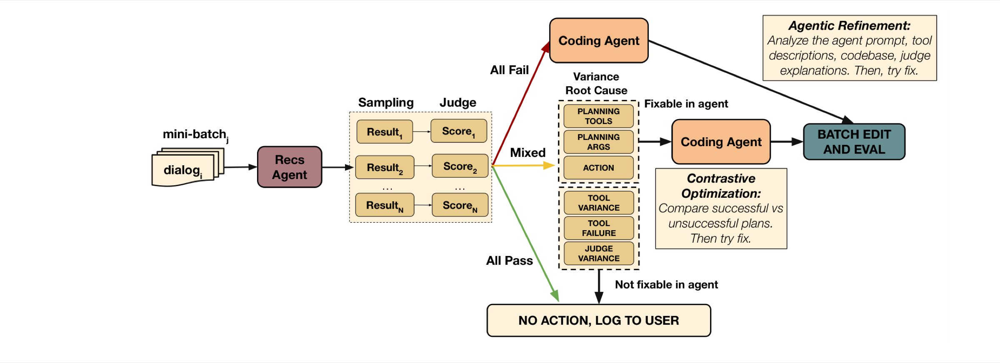
图中文字 · 中文翻译
Spotify 的自我改进循环
Spotify built a conversational music recommendation agent before launch, when no real conversations existed yet. The team generated synthetic multi-turn conversations to test it. Human reviewers rated that data above 90% on every quality measure.
Spotify's improvement loop runs each test conversation several times. Inconsistent results point to unstable planning or tool use. A coding agent then proposes fixes to the prompt and tools. Each round ends with a pull request that a person reviews, plus a full evaluation to catch regressions.
This loop improved quality by 8% over a prompt the team had already tuned heavily. In an online A/B test against the previous experience, the agent increased listening by 14% and weekly active users by 5%. Skips fell by 5%.
Takeaway: If you add a self-improvement loop to a product, start narrow. Keep a person reviewing each change. Measure the result with real users.
Bootstrapping Conversational Recommendation Agents At Spotify: Synthetic Data Generation and Self-Improvement Loops，Enrico Palumbo 等，2026。
图中文字 · 中文翻译
Spotify 的自我改进循环
Spotify 在上线前就做了一个对话式音乐推荐 agent，那时还没有真实对话。团队生成了多轮的合成对话来测试它。人工审查者在每一项质量指标上都给这批数据打了 90% 以上。
Spotify 的改进循环会把每段测试对话跑若干次。结果不一致，往往指向不稳定的规划或工具使用。然后由一个 coding agent 对 prompt 和工具提出修复。每一轮以一个由人审查的 pull request 结束，再加上一次完整评估，用来抓住回归。
这条循环在团队已经反复调过的 prompt 之上，又把质量提高了 8%。在针对先前体验的在线 A/B 测试中，这个 agent 让收听量提高了 14%，周活跃用户提高了 5%。跳过率下降了 5%。
要点：如果你要给产品加上一条自我改进循环，先从窄处开始。每一次改动都保留人工审查。用真实用户来衡量结果。
No Second Run: Does RSI Stop at Frontier Pre-training?, Xiaojie Cai et al., 2026.

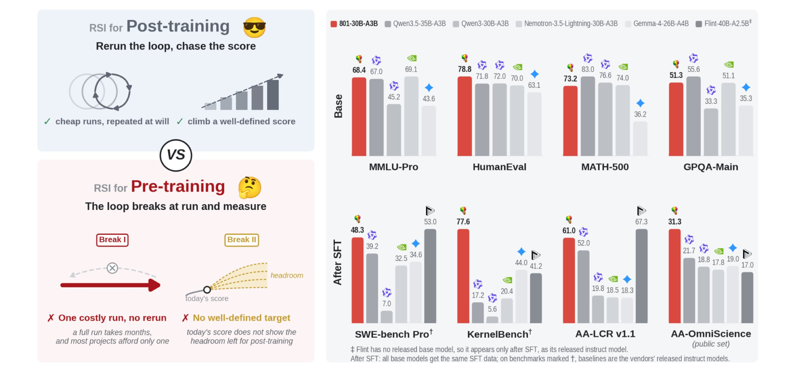
图中文字 · 中文翻译
预训练中的 RSI 与 801-30B-A3B 的对比结果
右侧柱状图比较 801-30B-A3B（红柱）与 Qwen3.5-35B-A3B、Qwen3-30B-A3B、Nemotron-3.5-Lightning-30B-A3B、Gemma-4-26B-A4B、Flint-40B-A2.5B 等。上排是 Base，下排是 After SFT。脚注说明 Flint 没有公开 base 模型，因此只出现在 SFT 之后；在标了 † 的基准上，对照是各家发布的 instruct 模型。
RSI loops usually depend on cheap, repeatable runs. Pre-training runs are neither cheap nor repeatable. One run uses hundreds of thousands of GPU-hours over months. In practice, a team gets one full run.
Cai et al. split pre-training work into smaller loops that agents could run. Some loops debug infrastructure and data. One uses tiny fine-tuning runs to estimate how much room a model leaves for post-training. Others improve data filters and web crawling. All loops write to shared notes, including failed ideas and why they failed.
A newly formed team trained 801-30B-A3B-Base with these loops in three months on 11.8T tokens. As a base model, it beats Qwen3-30B-A3B and Nemotron-3.5-Lightning-30B-A3B. It trails only the larger Qwen3.5-35B-A3B.
Takeaway: If your main loop is too slow or expensive to repeat, split it into smaller loops. Each smaller loop needs a metric you can measure quickly.
No Second Run: Does RSI Stop at Frontier Pre-training?，Xiaojie Cai 等，2026。
图中文字 · 中文翻译
预训练中的 RSI 与 801-30B-A3B 的对比结果
右侧柱状图比较 801-30B-A3B（红柱）与 Qwen3.5-35B-A3B、Qwen3-30B-A3B、Nemotron-3.5-Lightning-30B-A3B、Gemma-4-26B-A4B、Flint-40B-A2.5B 等。上排是 Base，下排是 After SFT。脚注说明 Flint 没有公开 base 模型，因此只出现在 SFT 之后；在标了 † 的基准上，对照是各家发布的 instruct 模型。
RSI 循环通常依赖便宜、可重复的运行。预训练既不便宜，也不能反复跑。一次运行会在数月里消耗数十万 GPU 小时。实践中，一个团队往往只有一次完整运行。
Cai 等人把预训练工作拆成 agent 可以跑的更小循环。有些循环调试基础设施和数据。有一个循环用很小的微调运行，去估计模型给 post-training 留了多少空间。还有一些循环改进数据过滤和网页抓取。所有循环都写入共享笔记，包括失败的想法以及失败的原因。
一个新组建的团队用这些循环，在三个月里、用 11.8T token 训练了 801-30B-A3B-Base。作为基座模型，它超过了 Qwen3-30B-A3B 和 Nemotron-3.5-Lightning-30B-A3B。只落后于更大的 Qwen3.5-35B-A3B。
要点：如果主循环太慢或太贵，没法反复跑，就把它拆成更小的循环。每一条小循环都需要一个能很快测到的指标。
The first four papers cover what a loop should change and when it runs. The options are the harness before deployment, the harness during use, the improvement procedure, and the weights. Papers five to seven cover how to verify that an improvement holds on new tasks. Paper eight shows how an attacker can steer a loop through its benchmark. Spotify and No Second Run show RSI working on a real product and on a frontier training run.
If you adopt only one practice, set aside a held-out test set for evaluation only. Score the starting version and the current version on it before you trust any gain.
Continue to track RSI papers here: https://academy.dair.ai/papers/collections/self-improving-agents.
前四篇论文讨论循环应当改什么、以及它在何时运行。可选的对象是：部署前的 harness、使用中的 harness、改进程序本身，以及权重。第五到第七篇讨论如何验证一次改进在新任务上仍然成立。第八篇展示攻击者如何通过基准来引导一条循环。Spotify 与 No Second Run 则展示 RSI 如何在真实产品和一次前沿训练运行中工作。
如果你只采纳一项做法，请单独留出一份只用于评估的测试集。在相信任何收益之前，先在它上面给起始版本和当前版本打分。
可以继续在这里跟踪 RSI 论文：https://academy.dair.ai/papers/collections/self-improving-agents。
评论
评论由 GitHub Discussions 提供。